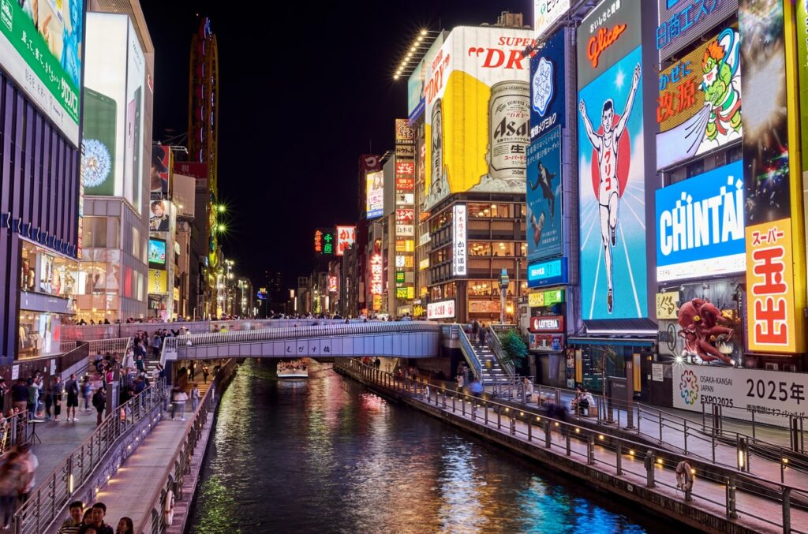

Best Places to Visit in Japan 2023
Welcome to our Japan Travel Hub, your passport to the Land of the Rising Sun! Immerse yourself in the rich tapestry of ancient traditions, modern marvels, and natural wonders that define Japan. From vibrant Tokyo streets to serene Kyoto temples, our guides unveil the essence of this captivating country. Discover hidden gems, cultural insights, and practical tips for an unforgettable journey through Japan's enchanting landscapes.
Tokyo

Explore Tokyo, where cutting-edge technology coexists with timeless traditions. This dynamic metropolis offers a sensory overload of neon-lit streets, bustling markets, and serene gardens. Dive into the vibrant energy of districts like Shibuya and Akihabara, then find tranquility in the historic temples and cherry blossom-lined parks. Tokyo, a city of contrasts and endless discoveries.
Osaka
Discover the heart of Kansai in Osaka, a city pulsating with gastronomic delights, vibrant street life, and historic landmarks. Renowned for its street food scene and lively atmosphere, Osaka seamlessly blends tradition with modernity. Dive into the spirited culture of this culinary haven and explore its unique attractions, making every visit an unforgettable adventure.
Kyoto

Step into the serene beauty of Kyoto, a city where ancient traditions thrive amidst picturesque landscapes. Home to historic temples, traditional tea houses, and enchanting gardens, Kyoto offers a tranquil escape. Immerse yourself in the elegance of its cultural heritage, where every corner reveals the grace of Japan's imperial past.
Hokkaido

Embark on a journey to Hokkaido, Japan's northern gem. This vast island captivates with its pristine landscapes, from snow-covered mountains to expansive fields. Discover the unique blend of outdoor adventures, hot springs, and delectable local cuisine. Hokkaido promises a winter wonderland and a summer haven, making it a year-round delight for explorers.
Kobe
Welcome to Kobe, where modernity meets tradition in a coastal city embraced by mountains. Known for its iconic Kobe Beef and historic Nada sake breweries, the city offers a delightful blend of culinary excellence and cultural richness. Explore scenic harbors, vibrant markets, and the captivating blend of old-world charm and contemporary allure in Kobe.


Nagoya
Discover Nagoya, a dynamic city in the heart of Japan blending tradition and innovation. Home to historic landmarks like Nagoya Castle and the modern allure of Nagoya TV Tower, the city captivates with its rich culture. Dive into the bustling markets, vibrant festivals, and cutting-edge attractions that make Nagoya an exciting destination.
Nagoya Castle
Explore the timeless beauty of Nagoya Castle, an iconic symbol of Japan's feudal past. Marvel at its majestic architecture, lush gardens, and historical artifacts, offering a captivating journey through history.
Oasis 21 and Nagoya TV Tower
Discover Nagoya's modern landmarks at Oasis 21 and Nagoya TV Tower. Oasis 21, with its futuristic design, offers a vibrant shopping and entertainment complex. Adjacent, Nagoya TV Tower stands tall, providing panoramic city views. Together, they showcase Nagoya's blend of contemporary architecture and cultural experiences.
Legoland
Experience family fun at Nagoya Legoland, where creativity and excitement converge. With captivating rides, impressive Lego sculptures, and interactive zones, Legoland promises a day of imaginative adventures for all ages.
Nagoya City Science Museum
Unveil the wonders of science at Nagoya City Science Museum. With captivating exhibits, an enormous planetarium, and interactive displays, it's a fascinating journey through the marvels of our world and beyond.